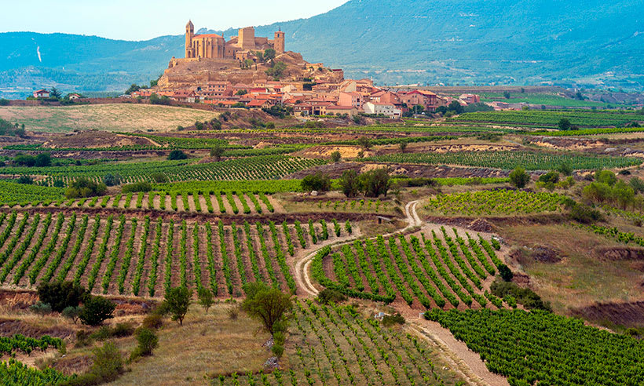

Destinos destacados
-

Ushuaia
Es considerada la más austral del mundo y presenta un relieve irregular: valles glaciarios, turberas y sierras.
Más información -

El cerro 7 colores
El monte se encuentra en la Cordillera del Vilcanota a 5.200 metros sobre el nivel del mar, en el distrito de Pitumarca.
Más información -

La Rioja
En la provincia se encuentra un predominante relieve montañoso que, debido a la falta de un curso de agua permanente, presenta una escasa vegetación.
Más información
Acerca de nosotros
somos estudiantes del Ipet 379, hicimos esta pagina web para completar la tarea del cursado. actualmente solo funciona el destino ushuaia (en proceso de mejora)